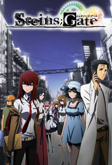

Steins; Gate
Okabe, a mad scientist, along with his childhood friend, Mayuri, and their hacker, Daru form the "Future Gadget Research Laboratory". Their function is to create incredible futuristic technology; however, the only interesting invention is a Phone Microwave that turns bananas into oozing green gel. During an experiment gone wrong, they discover their microwave can send text messages to the past. Also, the sent messages can change time and cause unknown consequences as well. Some of theses Okabe may not be able to deal with...